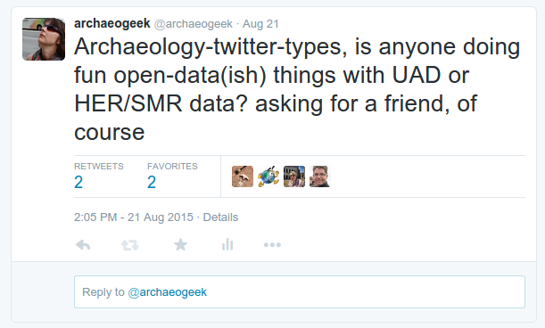
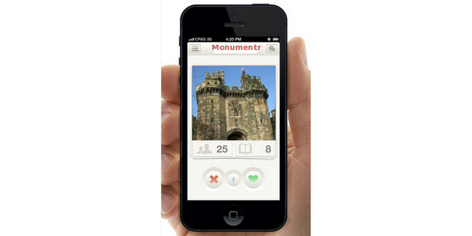
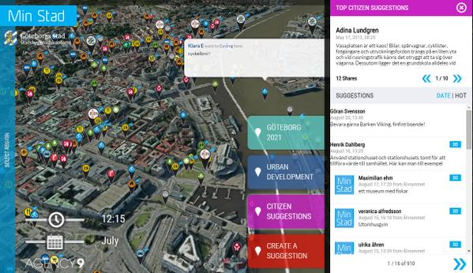

I'm an ex-archaeologist and GeoGeek,
Passionate about open source software, open data and open standards,
(and still very keen on archaeology)
Beyond the Castle and HackLancaster: our story begins
The Brief: Open up the data in the Lancaster UAD for use in a 24hr hackathon
...in a prison
Question: How to achieve this with not a lot of time (or money)?
UADs are great resources, but often locked away and never really used. The best-case scenario is absorption into the SMR/HER.
...useful?
My scientific check on this:

The Result:
... (nothing)
Beyond the hackathon, whatever we did had to be standards-compliant, updateable, reusable and sustainable in the long term
The data I had to work with:
A number of spatial datasets (shape files),
An access 97 database,
Lots of georeferenced scans of historic maps,
Lots of historic images such as paintings or photos
Task #1: Get the data out of Microsoft Access 97!
PostgreSQL was a no-brainer due to it's spatial capabilities, and there are plenty of open source, OS-agnostic libraries for working with MS Access.
I used the following and combined them into some python scripts for future reuse:
Along with the images, all of this was hosted on a linux virtual machine running a simple web server
Documentation was produced using GitBook
So it was available online and could be updated throughout the hackathon as needed
So, how did it go?
Two teams of hackers used the data
The first created a mobile app, allowing people to follow trails
around the City "checking in" to monuments
The second created a tool visualising the distribution of finds by period and type
Observations (NOT criticisms)
# 1: UAD data is complicated!
The heavily relational structure is hard to navigate
The controlled language is opaque and can be difficult to understand.
See the RCHME Archaeological Periods List for an example Simple questions become complex queries
# 2: GIS knowledge is specialised
The historic base maps and PostGIS functions were not used
We can't assume everyone has geospatial or analytical expertise
# 3: People may jump to tenuous conclusions
Correlation does not equal causation!
“(non-professional) interpretations may... be regarded by the archaeologist as an exercise in myth or superstition”
In conclusion, non-archaeologists may use the data in unexpected ways...
BUT using genuine archaeological data is a step forward in public engagement with the discipline.
Moving forward...
We have a framework that could be quickly and easily applied to any UAD to make it available online and for wider use/analysis by both archaeologists and the general public
All the components are open source, and don't require a huge amount of expertise to assemble or configure
Processes can be automated and repeated, so the data can be updated whenever necessary
BUT...
We need a "translation-layer" to convert UAD terminologies and structures into something easier for non-specialists to understand, without losing the academic rigour
Deeply relational structures could be flattened into single tables
but this may bring additional complications
for updating, querying, displaying etc...
However the flexibility of this approach means that multiple front-ends can be constructed to serve different purposes and engage with different demographics
So you want to produce a Tinder for Monuments? Go ahead!

You can also take advantage of the latest technology

The risk of not engaging is that real harm is done through lack of knowledge
The most important thing is to make your data available because...
“The coolest thing to do with your data will be thought of by someone else”
and...
“The set of useful things one can do with a given informational resource is always larger than can be done (or even thought of) by one individual or group”
Thanks for listening!
@archaeogeek / Jo Cook / Astun Technology


 ...useful?
...useful?